Automatic interactive plots for almost any netCDF file, plus publication-quality static figures with pub_plot.
Call plot() on a dataset for an automatic interactive plot, similar in spirit to the command-line tool ncview — but in Jupyter or a browser. Illustrated below with a sea-surface temperature dataset:
ds = nc.open_data("sst.mon.mean.nc") ds.subset(year=2000) ds.plot()

The plot type is chosen automatically from the shape of the data. A zonal mean gives a zonal profile:
ds = nc.open_data("sst.mon.mean.nc") ds.subset(year=2000) ds.tmean() ds.zonal_mean() ds.plot() # zonal profile

A zonal mean tracked over time renders as a Hovmöller-style heatmap — here, the change in zonal-mean temperature relative to an 1850–1869 baseline:
ds = nc.open_data("sst.mon.mean.nc") ds.zonal_mean() ds.annual_anomaly(baseline=[1850, 1869], window=20) ds.plot()

Once the data has a single spatial value per time step (e.g. after spatial_mean()), it plots as a time series — here, global mean sea surface temperature since 1850:
ds = nc.open_data("sst.mon.mean.nc") ds.spatial_mean() ds.plot() # time series

pub_plot produces a static plot suitable for a paper or presentation, currently restricted to regular lon/lat grids with a limited set of customizations (such as the colour scale):
ds.tmean() ds.pub_plot()

varVariable to plot. Only needed when the dataset has more than one.
extent[lon_min, lon_max, lat_min, lat_max] in degrees, to plot part of the map.
titlePlot title.
legendColour bar label. Built from the variable's long name and units by default.
size[width, height] of the figure in inches.
landColour to fill the land with, e.g. "grey".
coloursColour map, e.g. "viridis". Add "_r" to reverse it.
norm"log" for a logarithmic colour scale, or a matplotlib normalisation.
limits[min, max] of the colour scale. Each end can be a number, None or a percentile such as "2%".
projectionA cartopy projection, e.g. ccrs.Mollweide().
coastCoastline detail: "auto", or GSHHS coastlines from "coarse" to "full". None draws none.
scaleResolution of the land fill: "low", "medium" or "high".
gridWhether to draw the dashed grid lines. Default True.
grid_colourColour of the grid lines.
grid_labelsWhether to show the lon/lat labels around the map. Default True.
legend_position"right" or "bottom" for the colour bar, or None to drop it.
robustSet the colour limits to the 2nd and 98th percentiles, so outliers don't wash out the scale.
breaksTick positions on the colour bar.
fontFont size for the title and colour bar label.
outFile to save the figure to, e.g. "sst.png".
dpiResolution of the saved file, e.g. 300 for print.
See the API reference for the formats, defaults and remaining options.
Each example below changes one of those options. Everything else is left at its default, and projection needs import cartopy.crs as ccrs.
ds.pub_plot(title="Mean sea surface temperature")
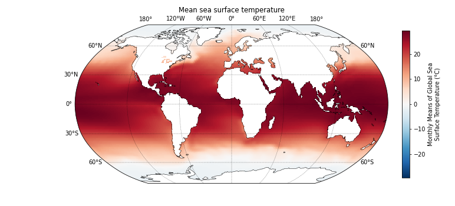
Any string. Supports matplotlib mathtext. Use "" for no label.
Default: built from the variable's long name and units.
ds.pub_plot(legend="Sea surface temperature (°C)")
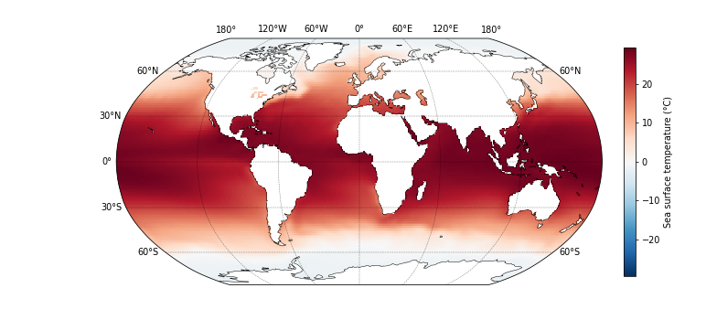
Any matplotlib colour map name, e.g. "viridis", "plasma" or "RdBu_r", or a Colormap object. Add "_r" to reverse any of them.
Default: "viridis", or the diverging "RdBu_r" when the colour scale spans zero.
ds.pub_plot(colours="viridis")
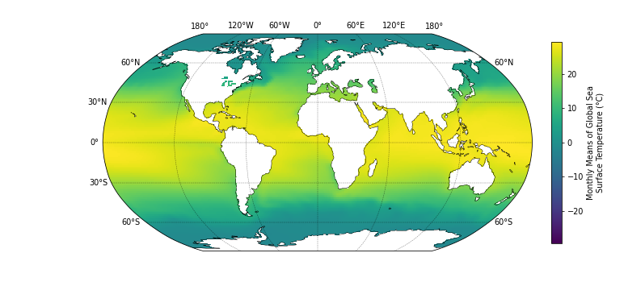
[min, max]. Each end can be a number, None for the data minimum or maximum, or a percentile string such as "2%".
A range spanning zero is made symmetric, so [-1, 5] becomes [-5, 5].
Default: the data minimum and maximum.
ds.pub_plot(limits=[-20, 20])
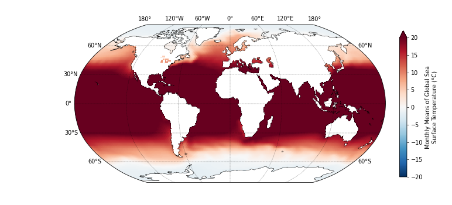
True — colour limits set to the 2nd and 98th percentiles, overriding limits.
False — the full data range (default).
ds.pub_plot(robust=True)
A list of numbers, e.g. [0, 10, 20, 30]. Sets the tick positions only; the colours stay continuous.
Default: ticks chosen automatically.
ds.pub_plot(breaks=[-30, -15, 0, 15, 30])
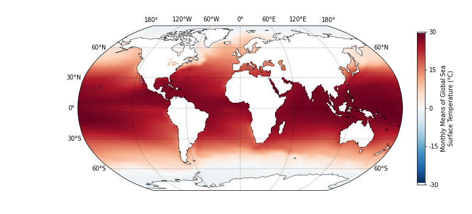
"right" — vertical colour bar (default).
"bottom" — horizontal colour bar under the map.
None — no colour bar.
ds.pub_plot(legend_position="bottom")
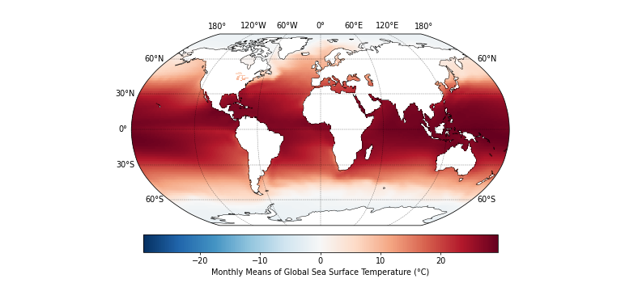
Any matplotlib colour: a name such as "grey", "tan" or "lightgrey", or a hex code such as "#d9d9d9". None leaves the land unfilled.
The level of detail comes from scale: "low", "medium" or "high".
ds.pub_plot(land="grey")
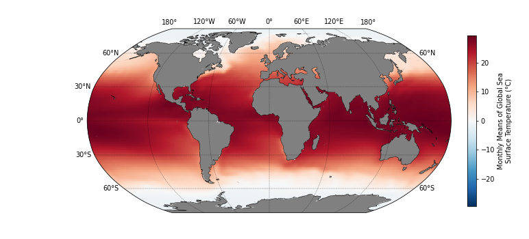
True — dashed lon/lat grid lines (default).
False — no grid lines. The labels are separate, see grid_labels.
grid_colour sets the colour of the lines.
ds.pub_plot(grid=False)
True — lon/lat labels around the map (default).
False — no labels. The grid lines are separate, see grid.
ds.pub_plot(grid_labels=False)
Any cartopy projection, e.g. ccrs.Robinson(), ccrs.Mollweide() or ccrs.NorthPolarStereo(). None gives plain lon/lat.
Default: chosen from the extent of the data.
ds.pub_plot(projection=ccrs.Mollweide())
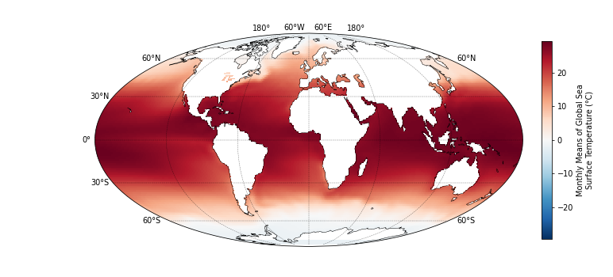
[lon_min, lon_max, lat_min, lat_max] in degrees, e.g. [-80, 20, 20, 70].
Default: the full extent of the data.
ds.pub_plot(extent=[-80, 20, 20, 70])
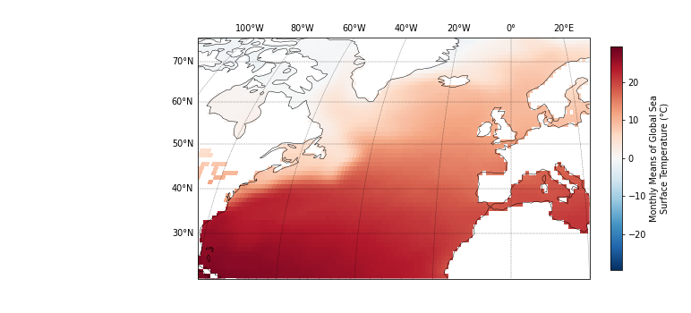
nc.panel_plot draws a grid of pub_plot-style maps from a dictionary of datasets, with the keys as the panel titles. Every panel shares one colour scale and one colour bar by default, worked out from the data of all of them, so they can be compared directly. The examples below use monthly COBE-SST2 sea surface temperature, opened straight from a THREDDS server.
A seasonal climatology, two panels per row:
ds = nc.open_thredds("https://psl.noaa.gov/thredds/dodsC/Datasets/COBE2/sst.mon.mean.nc") panels = {} for season in ["DJF", "MAM", "JJA", "SON"]: seasonal = ds.copy() seasonal.subset(years=range(1991, 2021), seasons=season) seasonal.tmean() panels[season] = seasonal nc.panel_plot(panels, ncol=2, limits=[0, 30], legend="Sea surface temperature (°C)")
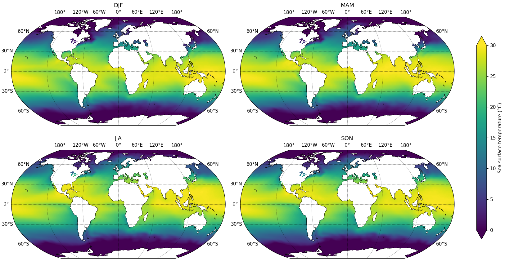
Panels do not have to share a scale. With shared_colourbar=False each panel gets its own colour bar, and the plotting options can be given as a list with one value per panel — useful when a map of values sits beside a map of differences:
early = nc.open_thredds("https://psl.noaa.gov/thredds/dodsC/Datasets/COBE2/sst.mon.mean.nc") early.subset(years=range(1850, 1880)) early.tmean() recent = nc.open_thredds("https://psl.noaa.gov/thredds/dodsC/Datasets/COBE2/sst.mon.mean.nc") recent.subset(years=range(1995, 2025)) recent.tmean() change = recent.copy() change.subtract(early) nc.panel_plot( {"Mean SST, 1995-2024": recent, "Change since 1850-1879": change}, ncol=2, shared_colourbar=False, colours=["viridis", "RdBu_r"], limits=[[0, 30], [-2, 2]], legend=["Sea surface temperature (°C)", "Temperature change (°C)"], legend_position="bottom", )
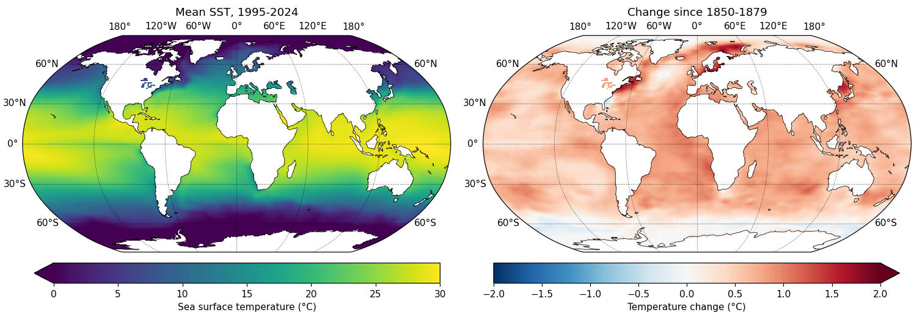
panel_plot takes every option pub_plot does. A single value applies to all panels; a list applies one value per panel, in the order of the dictionary.
ncolNumber of panel columns. Chosen automatically if not given.
nrowNumber of panel rows. Chosen automatically if not given.
shared_colourbarTrue (default) for one shared colour bar, False for one colour bar per panel.
size[width, height] of the whole figure in inches.
outFile to save the whole figure to.
dpiResolution of the saved file.
var, extent, land, projection, coast, scale, grid, grid_colour, grid_labelsSame as pub_plot. A single value applies to every panel; a list applies one value per panel, whether or not the colour bar is shared.
colours, norm, limits, robust, legend, legend_position, breaks, fontSame as pub_plot. With shared_colourbar=True these must be single values, since one colour bar needs one scale. With shared_colourbar=False they can be single values or a per-panel list too.
See the API reference for the formats, defaults and remaining options.
The seasonal climatology from above, with land, grid, colours and limits all varied per panel:
ds = nc.open_thredds("https://psl.noaa.gov/thredds/dodsC/Datasets/COBE2/sst.mon.mean.nc") panels = {} for season in ["DJF", "MAM", "JJA", "SON"]: seasonal = ds.copy() seasonal.subset(years=range(1991, 2021), seasons=season) seasonal.tmean() panels[season] = seasonal nc.panel_plot( panels, ncol=2, shared_colourbar=False, land=["grey", "tan", "lightgrey", None], grid=[True, False, True, False], colours=["viridis", "plasma", "cividis", "magma"], limits=[[0, 25], [0, 28], [5, 30], [0, 25]], legend_position="bottom", )
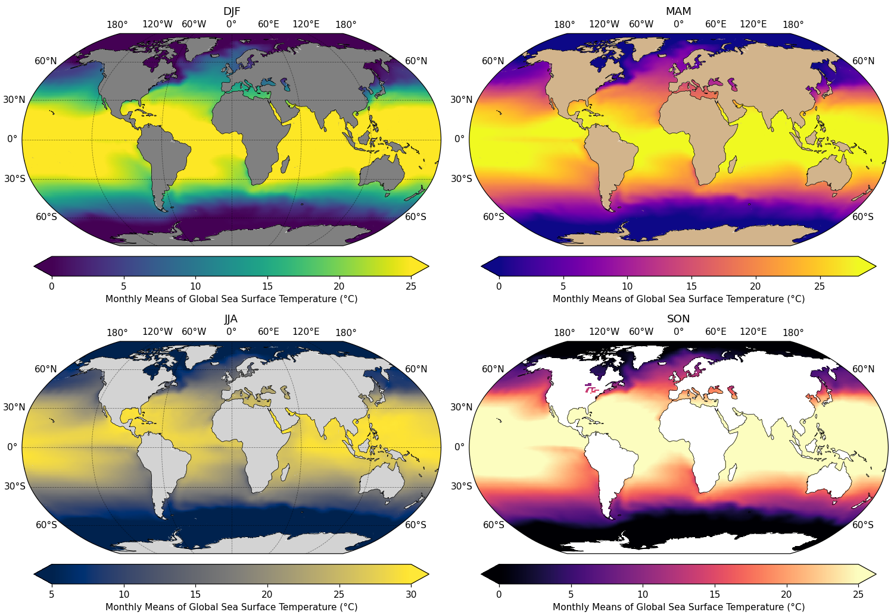
Interactive plotting is delegated to the companion ncplot package, which inspects the dataset and picks a suitable plot built on hvplot. It favours rapid exploratory analysis over deep customization, but most hvplot customization options — title, logz, clim, and so on — can be passed straight to plot() and are forwarded automatically.